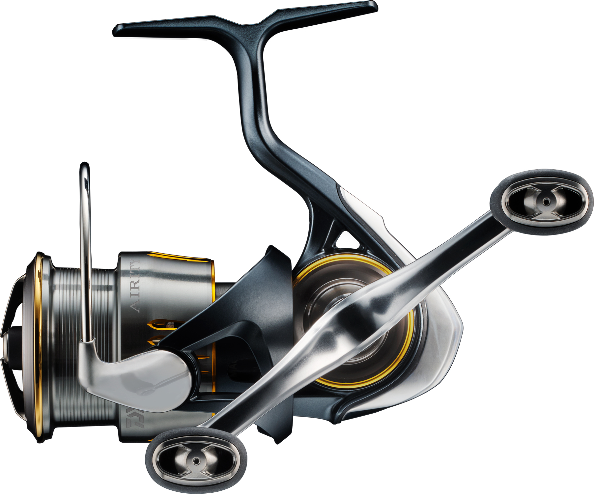

2026年新作エギまとめ
＜注目の9種をメーカー別に紹介＞

2026年もエギの新作が続々と登場している。人気モデルのリニューアルから、根掛かり対策や沈下速度の調整といった新しい機能を持つモデル、懐かしの名作の復刻、そしてルアーメーカーの初エギまで、今年は顔ぶれが多彩だ。
この記事では、2026年に発売・発表された注目の新作エギ9種を、サイズや特徴とあわせてメーカー別に紹介する。最後に、目的別の選び方と、新作エギと合わせたいおすすめのエギングリールもまとめた。
※2026年10月12日時点の情報です。復刻・新サイズ・発売予定のモデルを含みます。
目次
2026年新作エギ一覧
| エギ名 | メーカー | サイズ | 区分 |
|---|---|---|---|
| エギ政 改 | DUO | 2.5・3・3.5号 | リニューアル |
| エメラルダス ダートLC ネガード | ダイワ | 2.5・3・3.5号 | 新モデル |
| クリンチ カエル跳びアッパー | シマノ | 2.5・3号 | 新モデル |
| キャストランナー | クレイジーオーシャン | 3・3.5号 | 新モデル |
| アオリーQ 大分布巻 | YO-ZURI／デュエル | 3・3.5号 | 復刻 |
| ハグゴス HUGGOS | リトルジャック | 55・65・75・90mm | 新モデル |
| ゲキダキ カミナリ | ジャッカル | 3・3.5号 | 新モデル |
| ラマレル | BlueBlue | 3.5号（確認分） | 発売予定 |
| エギ王K ディープ | ヤマシタ | 2.5・3・3.5号 | サイズ追加 |
リニューアル
エギ政 改（DUO）

画像出典:DUO公式HP
人気エギ「エギ政」がリニューアル。NORMALとSHALLOWの2タイプでタイプごとにラインアイの位置を変え、それぞれに合ったアクションとフォールを追求している。
シャローから深場までを1シリーズで攻められ、BKK製のカンナで刺さりと耐久性も高い。
- メーカー
- DUO
- サイズ
- 2.5号／3号／3.5号（各NORMAL・SHALLOW）
- 重さ・沈下速度
- 16g・約3.5秒/m（3号NORMAL）
- 価格
- 1,155円（税込・3号）
- 発売
- 2026年8月
新モデル
エメラルダス ダートLC ネガード（ダイワ）

画像出典:DAIWA公式HP
バス釣りのカバー打ちから発案された、FISH DEVICE社の着脱可能な「FDガード」を搭載した攻めのエギ。エギングの天敵である根掛かりを大幅に減らせる。
金属製のガードはボトム感度も上げてくれるので着底がわかりやすく、空中ではスタビライザーになるため、飛距離はノーマルタイプと変わらない。藻場や岩礁帯に思い切って投げ込みたい人向けの1本だ。
- メーカー
- ダイワ
- サイズ・重さ
- 2.5号 11g／3号 16g／3.5号 20g
- 沈下速度
- 2.5号 5.5秒/m／3号 4.0秒/m／3.5号 3.5秒/m
- 価格
- 1,590円（税別）
- 発売
- 2026年8月（2.5・3号）／9月（3.5号）
新モデル
クリンチ カエル跳びアッパー（シマノ）
画像出典:シマノ公式HP
左右への安定したワイドダートに、上方向への鋭い跳ね上がりを加えた「カエル跳びアッパー」が最大の特徴。立体的な軌道で幅広いレンジを探り、イカにスイッチを入れる。
激しいダートの直後にピタッと止まり、安定した姿勢で静かにフォールする「動」と「静」の切り替えで抱かせる布巻きモデル。2.5号・3号というテクニカルな番手なので、秋の新子シーズンにも出番が多い。
- メーカー
- シマノ
- サイズ・重さ
- 2.5号 10g／3号 14g
- 沈下速度
- 2.5号 約4秒/m／3号 約3秒/m（参考値）
- 価格
- 1,400円（税別）
新モデル
キャストランナー（クレイジーオーシャン）

画像出典:クレイジーオーシャン公式HP
最大の特徴はシンカーハンガー。ガン玉やオモリを追加すれば、その場で沈下速度を調整でき、水深・潮の速さ・風に合わせてすぐ対応できる。
アップアイ構造で軽いシャクリでもキレのあるダートが出て、イカが好む安定したフリーフォール姿勢も追求している。1本で状況に合わせたい人にオススメ。
- メーカー
- クレイジーオーシャン
- サイズ・重さ
- 3号 12g／3.5号 18g
- 価格
- 1,200円（税別）
- 発売
- 3.5号は発売中／3号は2026年9月
復刻
アオリーQ 大分布巻（YO-ZURI／デュエル）

画像出典:デュエル公式HP
当時の仕様をそのまま再現した、歴史あるアオリーQの復刻モデル。大きなシャクリで縦に跳ね上げる、昔ながらの誘いが得意だ。
根掛かりしにくいスナッグレスシンカーを採用し、カラーは「バレンシア」「マリン」「マーブルサクラダイ」など、プレミアムアオリーQの伝説的カラーを復刻・アレンジしている。新しく3号も登場した。
- メーカー
- YO-ZURI／デュエル
- サイズ・重さ
- 3号 16g／3.5号 19g
- 価格
- オープン価格
新モデル
ハグゴス HUGGOS（リトルジャック）

画像出典:リトルジャック公式HP
イカが日常的に食べているアジをリアルに再現した、魚型のエギ。ただ巻きで安定したS字アクション、ロッドワークを加えると鋭いS字スライドを出し、逃げ惑う魚の動きでイカの本能を刺激する。
背中は布巻きで抱いた時の違和感を減らし、同梱のキールブレードを付ければフラッシングとキレのあるダートも出せる。4サイズあり、ヒイカやヤリイカのライトエギングからアオリイカまで対応する。
- メーカー
- リトルジャック
- サイズ・重さ
- 55mm 6g／65mm 9g／75mm 14g／90mm 22g
- 沈下速度
- 4.5秒/m
- アクション
- S字・S字スライド
- 発売
- 2026年3月
新モデル
ゲキダキ カミナリ（ジャッカル）

画像出典:ジャッカル公式HP
固定ウエイトと専用シンカーの組み合わせで、飛距離・ダート・フォールの安定性を追求したエギ。しっかり飛んで、キレよくダートし、フォールでは姿勢が崩れにくい。
エギングの基本性能を高いレベルでそろえた1本で、初めての人からベテランまで使いやすい。
- メーカー
- ジャッカル
- サイズ・重さ
- 3号 16g／3.5号 22g
- 沈下速度
- 約4秒/m
- 価格
- 3号 1,320円／3.5号 1,375円（税込）
- 発売
- 2026年8月
発売予定
ラマレル（BlueBlue）

画像出典:片山愛海さんのX
ブルーブルーから初めてのエギが登場予定。片山愛海さん監修で、キレのあるダートと安定したフォールを追求している。
現時点で確認できているのは3.5号のみで、サイズ展開などの詳細は発表待ち。ルアーで人気のブルーブルーがエギでどんな答えを出すのか注目の1本だ。
- メーカー
- BlueBlue
- サイズ
- 3.5号（ほかのサイズは未発表）
- アクション
- ダートアクション
- 発売
- 2026年秋発売予定
サイズ追加
エギ王K ディープ（ヤマシタ）

画像出典:ヤマシタ公式HP
深場や潮の速いエリアで安定した速いフォールを実現する、エギ王Kのディープモデル。2026年に2.5号・3号が追加され、3.5号には新色が加わった。
沈下速度は2.5号で約2.5秒/m、3号・3.5号で約2秒/m。潮に流されやすい日や、水深のあるポイントでボトムを取りたい時に頼れる。
- メーカー
- ヤマシタ
- サイズ
- 2.5号／3号／3.5号
- 重さ
- 19g（3号）
- 沈下速度
- 2.5号 約2.5秒/m／3号・3.5号 約2秒/m
- 発売
- 2026年9月（2.5・3号）
目的別の選び方
秋の新子シーズンは2.5〜3号、春の大型狙いは3.5号が基本。まずは使い慣れたタイプの新作から試し、状況に合わせて機能の違うエギを1〜2本足していくと、攻め方の幅が広がる。エギのサイズ・重さから沈下速度を調べたい時は、エギ沈下速度計算ツールも使ってみてほしい。
新作エギと合わせたい おすすめエギングリール3選
エギングは1日に何百回もシャクるので、リールは軽さが何より大事。番手はPE0.6〜0.8号を150〜200m巻ける2500〜C3000番、シャクリ後の糸ふけを素早く取れるダブルハンドルも人気だ。ここでは価格帯別に3台を紹介する。
エントリー
26ミラベル C3000HG（シマノ）
軽さとレスポンスを追求したマグナムライトシリーズの入門機。CI4+ボディでクラスを超えた軽さを持ちながら、駆動部にはHAGANEギアを搭載。26年モデルではインフィニティドライブ、アンチツイストフィン、Xプロテクトなどの上位機種の技術が加わり、巻き上げ・トラブルレス・防水の性能が上がった。
シマノ自身が「激しいシャクリを繰り返すエギング」に向くとしているモデル。C3000HGはハイギアなので、シャクリ後の糸ふけを素早く回収できる。2万円以下で軽いエギングリールが欲しい人にまずオススメしたい。
- メーカー
- シマノ
- 自重
- 200g
- ギア比
- 6.2（ハイギア）
- PE糸巻量
- 1号-400m／1.5号-270m／2号-200m
- 価格
- 17,300円（税別）
- 発売
- 2026年9月
ミドル
24ヴァンフォード C3000SDH（シマノ）
マグナムライトシリーズの中核モデル。軽快な操作性と感度、ここち良い巻き感に加え、インフィニティクロス・インフィニティドライブで巻き上げの力強さとギアの耐久性が向上した。ドラグの耐久性もシマノ基準で従来比約10倍になっている。
C3000SDHはダブルハンドル仕様で、シャクリ後の糸ふけを取りやすくエギングに定番の番手。軽さと耐久性のバランスが良く、長く使える1台を選びたい人に。
- メーカー
- シマノ
- 自重
- 185g
- ギア比
- 5.1
- ハンドル
- ダブルハンドル
- 価格
- 36,900円（税別）
ハイエンド
23エアリティ LT2500S-DH（ダイワ）

画像出典:DAIWA公式HP
LT2500Sで150gと、ダイワ史上最高レベルの軽さを実現した超軽量スピニングリール。マグネシウムのモノコックボディに、ZAION製のエアドライブローターなど「エアドライブデザイン」をフル装備し、巻き出しの軽さとレスポンスが際立つ。
LT2500S-DHはダブルハンドル仕様。1日シャクリ続けるエギングでは軽さがそのまま疲れにくさにつながるので、とにかく軽くて感度の高いリールが欲しい人に。
- メーカー
- ダイワ
- 自重
- 165g
- ギア比
- 5.1
- PE糸巻量
- 0.6号-200m
- ハンドル
- ダブルハンドル
- 価格
- 67,500円（税別）